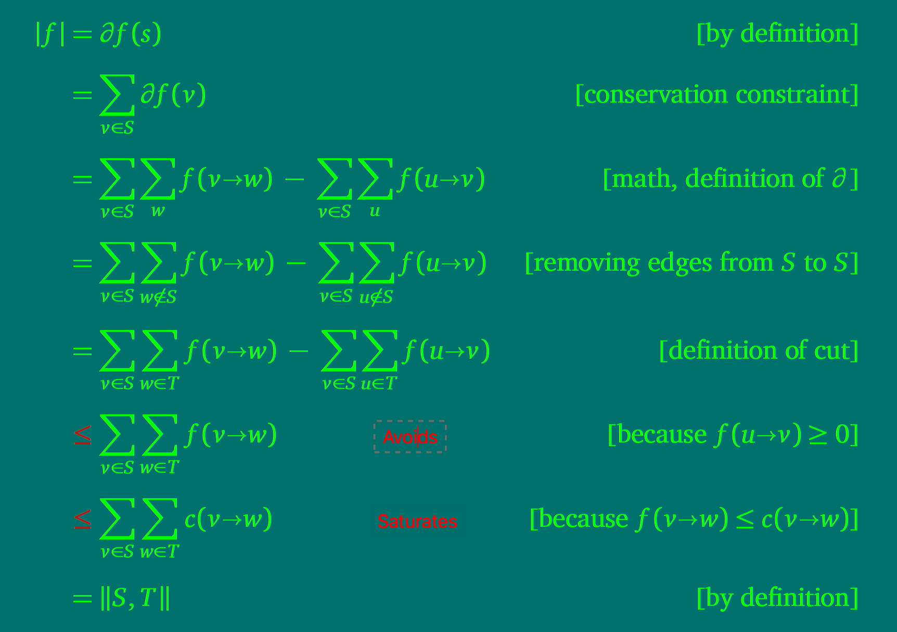

读书笔记之《Algorithms》10
~-~> 2020-11-20
Maximum Flows & Minimum Cuts（最大流量和最小切割）
定义
给定（Fix）一个有向加权图，以及一对起点（s）和终点（t），权重代表该边所能承载的最大速率。 最大流量问题就是求物资（假设的）从 s 运送到 t 的最大速率。 最小切割问题就是求最小的代价（删图中的边）使得无法从 s 运送物资到 t。
书上最开始举的例子是美国从军事角度对俄罗斯铁路网的研究，所以才有了物资这个假设。
流量
- (s,t)-flow：一个函数，通常记作
f:E->R，R 的部分又记作|f|，含义是起点的流出量（有点净流出量的意思）：|f|= sum({f(s->w)|s->win E}) - sum({f(u->s)|u->sin E}) - 满足的流量守恒定律：sum({f(
u->v)|u->vin E}) = sum({f(v->w)|v->win E})（s,t 可能不满足该定律，其它节点 v 都是满足的） - 任一点流量：@f(v) = sum({f(
v->w)|v->win E}) - sum({f(u->v)|u->vin E})（净输出｜增益） - 所有节点的流量：sum({@f(v)|v in V}) = @f(s) + @f(t)，因为其余点满足守恒定律值为零； 另外，所有节点的流量之和应当为零，因为从 s 流出的物资必定全部送达 t，所以@f(s) = -@f(t)
- 容量函数：通常记作
c:E->R,R>=0，当0<=f(e)<=c(e)时，称 f 是可行的（feasible）； 当f(e)==c(e)时，称 f 饱和（saturate）使用 e； 当f(e)==0时，称 f 避免（avoid）使用 e - 最大流量问题：在给定的图和容量函数中计算一个尽可能大的
(s,t)-flow的值
切割（截流）
- (s,t)-cut：一次拆分，把图中所有节点分成不相交的两个子集 S、T，s in S、t in T
- 切分的破坏量：
||S,T|| = sum({c(v->w)|v in S,w in T,v->w in E}) - 最小代价截流问题：在给定的图和容量函数中计算一个尽可能小的
(s,t)-cut的破坏量
二者的联系
给定（Fix）任一可行的 flow 和 cut，
f <= ||S,T||。当且仅当 flowsaturate每一条 S 到 T 的边，avoid每一条 T 到 S 的边 时，f == ||S,T||。

更进一步，若 f == ||S,T||，则 f 为最大流量，(S,T) 为最小代价切割。
在所有的流网络中，给定（Fix）source s、target t，最大流量 等于 最小切割破坏量（就像是中间有个独木桥似的）。
Ford and Fulkerson’s augmenting-path algorithm
基于最大流量和最小切割的联系，Ford and Fulkerson 给出了一个算法，虽然只能用于容量是整数的场景，由于其从 0 开始迭代，假如最终最大流量是 f*，那么该算法可能需要迭代 f* 次。 然而，排除了特殊情况后，每次迭代都会增加 min(cf(u->v)|u->v in Ef)，Ef为上次迭代后 G 的容量剩余 Gf。
def FordFulkersonMethod(G,s,t):
initialize flow f to 0
while there exists an augmenting path p in the residual network Gf:
augment flow f along p # 不断增加总流量，虽然在某些边上可能是减少
return f
流的组合与分解
通过研究流的分解（实际上是上面算法的逆过程）的性质，Ford and Fulkerson 的算法复杂度为 Ω(VE)（渐近下界，换句话说前人后辈们的努力目标）。
计算增广路径（augmenting path）
类似 Whatever-First Search，计算增广路径的方法有：
- 深度优先，容易陷入死循环，且在容量为实数范围时不能收敛至正确解
- 最快增广，确保每次增加的流量都是最大的，用到了优先队列，不过容量为实数时同样失效，幸好可以收敛至正确解
- 最短增广，完美～！
书中的典型案例
（陆续完善……）
书中习题
（陆续完善……）
同一本书的文章集
- Preface-&-Introduction
- Recursion
- Backtracking
- Dynamic Programming
- Greedy Algorithms
- Basic Graph Algorithms
- Depth-First Search
- Minimum Spanning Trees
- Shortest Paths
- All-Pairs Shortest Paths
- 回到开头
- Applications of Flows and Cuts
- NP-Hardness
⚠️ 请先安装一款邮件软件（部分浏览器可能不支持，请使用设备默认浏览器打开本页面）